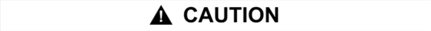
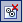
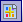
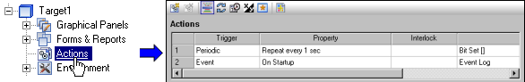
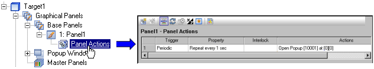

|
|
|
|
|
|
|
|
You can use actions to run operations at run time. For example, you can create an action to increase a variable value after a set period of time or run an action after someone touches the target machine and turns off the screen saver.
You can create the following types of actions:
Actions are global operations that you can create in the Action node.
Panel Actions are panel operations that you can create in the panel node.
|
|
|
UNINTENDED EQUIPMENT OPERATION
Failure to follow these instructions can result in death, serious injury, or equipment damage. |
|
 |
|
UNINTENDED EQUIPMENT OPERATION
Failure to follow these instructions can result in injury or equipment damage. |
The Actions Editor displays all the existing actions and allows you to create, modify, and delete actions. The Panel Actions Editor displays all the actions for a panel and allows you to create, modify, and delete panel actions. You can also create a Global Action report or a Panel Action report. For more information, see Section 21.10.1, Action Reports.
The following table describes each icon in the Actions and Panel Actions Editors.
|
Icon |
Name |
Description |
|
Create a New Action |
Creates a new action and displays the Action wizard. |
|
|
 |
Delete an Action |
Deletes the currently selected action. |
|
Show All Actions |
Displays all the actions in the target. |
|
|
Show Periodic Action(s) |
Displays only the periodic actions. |
|
|
Show Scheduled Action(s) |
Displays only the scheduled actions. Available only for Actions. |
|
|
Show Conditional Action(s) |
Displays only the conditional actions. |
|
|
Show Event Action(s) |
Displays only the event actions. |
|
|
 |
Reports |
Provides a list of actions used in the project. |
The Actions and Panel Actions Editors display the following properties for each action. You can only edit the properties in the Actions and Panel Actions Editors. For more information, see Section 9.4.3, Editing an Action.
|
Property |
Description |
|
Trigger |
Displays the trigger type. Click the ellipsis to display the Action wizard. |
|
Property |
Displays a description of the properties set for the trigger type. For Periodic actions, the frequency is displayed. For Scheduled actions, the minutes, hours or days plus the recurrence is displayed. Conditional actions display the trigger condition and Event actions display the trigger event. |
|
Interlock |
Displays the interlock setting for the action. |
|
PublishTo |
This column is displayed if Web Gate is enabled in the target properties. |
|
Actions |
Displays the Description from the second page of the Action wizard. |
To open the Actions Editor, click the Actions node in the Navigator and select New Action. Then follow the Action Settings wizard to create a new action.

To create Panel Actions, right-click the Panel node or the Panel Actions node in the Navigator and select New Action. Then follow the Action Settings wizard to create a new panel action. The Panel Actions node displays under the Panel node after you create the first action.

You can cut, copy, and paste actions from a Panel Actions node onto another Panel Actions node.
In the Navigator window, right-click on the Panel Actions node and select the operation, such as Cut All Actions.
Right-click on the destination Panel Actions node and select Paste Actions. All the actions are now pasted into the destination Panel Actions node.
Similarly, you can cut or copy from a global Actions node and paste onto another global Actions node.

You cannot copy and paste actions from Panel Actions onto global Actions and vice versa.
You can only cut/ copy/paste all the actions.
The target settings in the actions do not copy over to the destination Actions node.
When copying over actions with scripts that include objects, you must have an object with the same name existing in the destination.